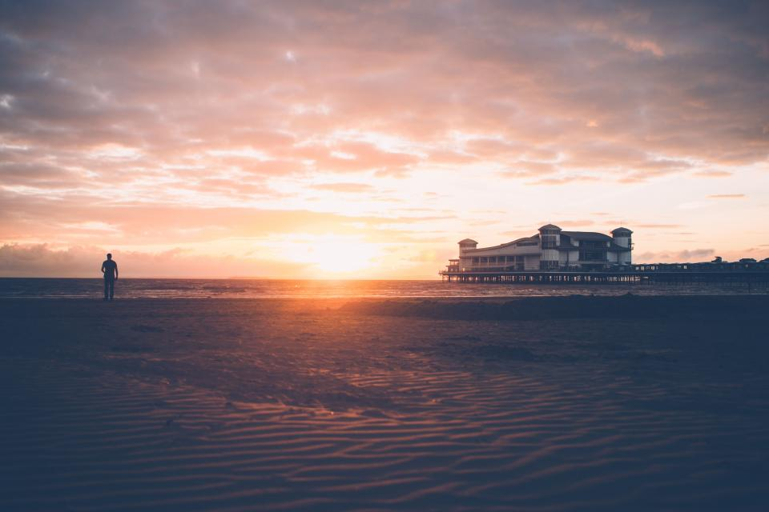
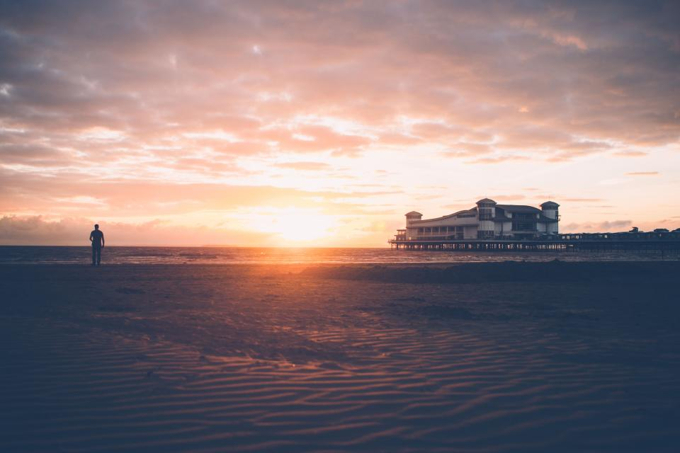

Our Vision
As a sea turtle conservationism community, our vision is to see cleaner environments for our sea turtles, as well as increased awareness from the general community
The ultimate goal is to see our sea turtle numbers rise back up.
As a sea turtle conservationism community, our vision is to see cleaner environments for our sea turtles, as well as increased awareness from the general community
The ultimate goal is to see our sea turtle numbers rise back up.
